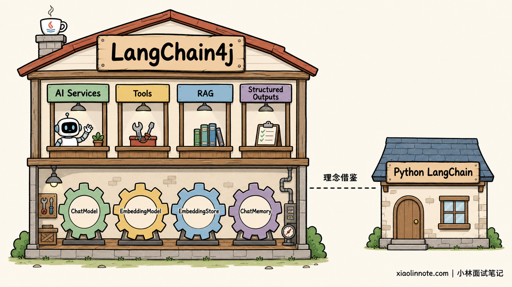
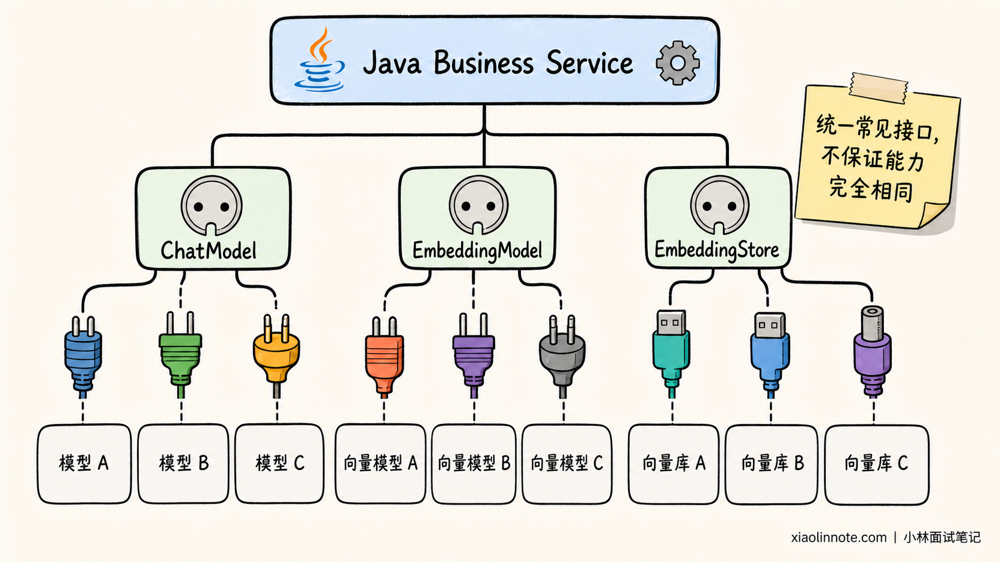
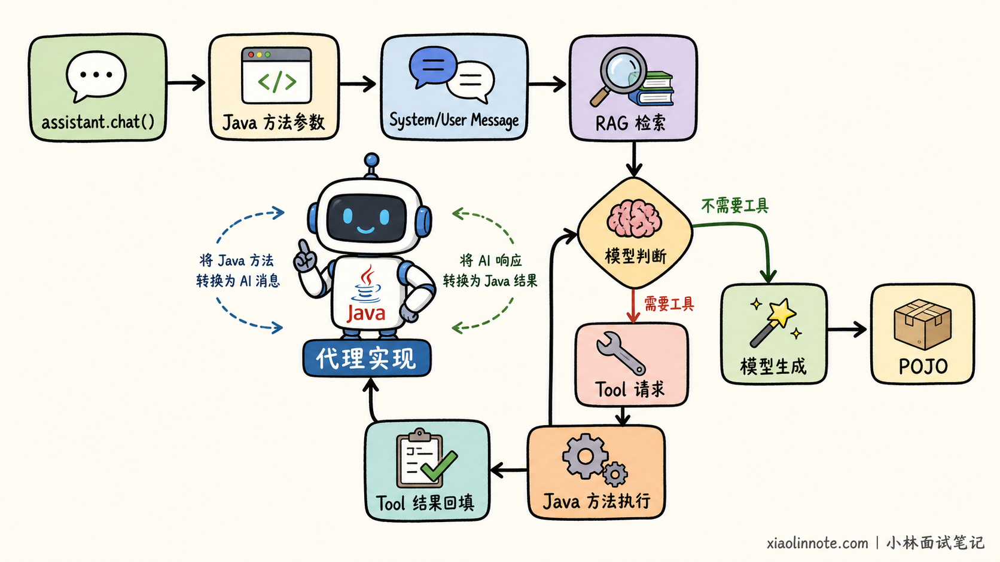
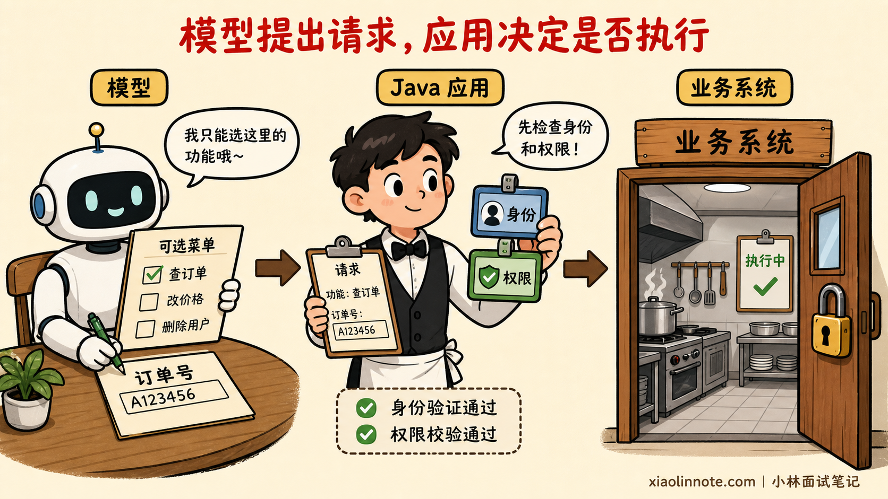
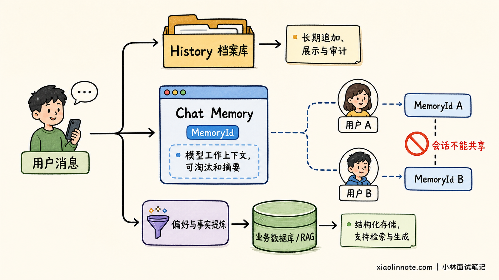
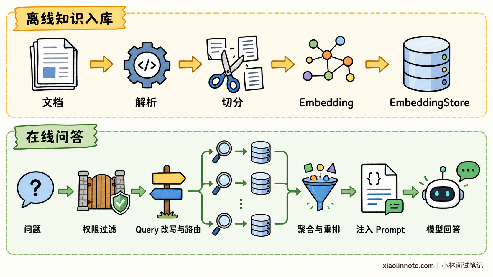
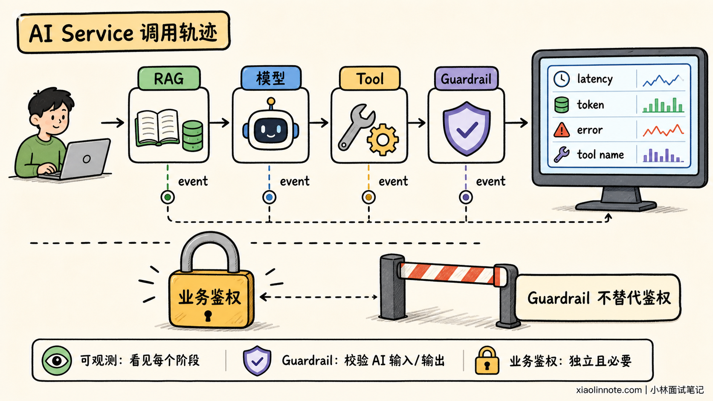

请你谈谈 LangChain4j 这类 Java 生态的 LangChain 衍生框架，主要帮开发者解决了哪些核心问题？它的核心适用场景是什么？
👔面试官：LangChain4j 是什么？它主要解决了什么问题？
🙋♂️我：它就是 LangChain 官方做的 Java 版本，把 Python API 翻译成 Java，让 Java 程序员也能用 Chain。
👔面试官：这个定位就错了。LangChain4j 的 API、内部实现和发布节奏都独立于 Python LangChain，官方还特意强调它不是 Java 移植版。那它为什么仍然有价值？
🙋♂️我：因为它把 OpenAI 接口封装了一层，少写一点 HTTP 请求代码，换模型也只要改个地址。
👔面试官：只看到模型调用太浅了。ChatModel、EmbeddingModel、EmbeddingStore 是统一抽象，高层还有 AI Services、Tools、Chat Memory、RAG 和结构化输出。它到底怎样接住 Java 业务代码？
🙋♂️我：用注解定义一个接口，框架就会把所有事情自动做好，所以接入 LangChain4j 以后，模型切换、安全、记忆和生产监控都不用关心了。
👔面试官：框架减少的是重复胶水代码，不会消灭供应商差异，也不会替你承担权限、数据隔离、评测和运维责任。Guardrails 和部分可观测能力目前还是实验性功能，这些边界不说清楚，怎么做生产选型？
这道题真正考的不是你记住了多少类名，而是能不能说清「为什么 Java 项目需要这一层抽象，以及这一层抽象不能替你做什么」。
💡 简要回答
我会先纠正一个常见误区：LangChain4j 虽然名字受 LangChain 启发，但它不是 LangChain 官方的 Java 移植版，而是一套独立开发、按照 Java 习惯设计的开源 LLM 应用框架。
它主要解决三类问题。第一类是供应商 API 不统一，框架通过 ChatModel、EmbeddingModel、EmbeddingStore 等接口，把常见模型和向量库接到相对一致的 Java API 上。
第二类是 LLM 应用胶水代码太多。AI Services 可以像 Spring Data JPA 一样声明 Java 接口，再把 Prompt、输出解析、Tools、Chat Memory 和 RAG 组装起来。
第三类是 Java 工程接入成本。官方生态能融入 Spring Boot、Quarkus、Helidon 和 Micronaut，复用依赖注入、配置、测试和监控体系。
它最适合已有 Java 技术栈，要做企业知识库问答、智能客服、文档抽取、内容生成，或者让模型调用现有 Java 服务的团队。特别是业务已经沉淀在 Spring Boot 或 Quarkus 中时，不必为了增加 AI 能力再单独维护一套 Python 服务。
不过我不会说用了它就能无成本切换所有模型。不同厂商在工具调用、JSON Schema、多模态和流式能力上仍然有差异，Chat Memory 也不等于完整聊天记录，复杂长事务仍需业务系统或专门编排层兜底。
选型时还要看模块成熟度。官方目前仍有带 beta 后缀的模块，Guardrails 和 AI Service Observability 也标注为实验性。
📝 详细解析
它是 LangChain 的 Java 版吗？
看到「LangChain4j」这个名字，很多林友会自然地把它理解成「LangChain for Java」。可如果我们真按这个思路回答，第一句话就可能踩雷。
官方的定位很明确：LangChain4j 是从 Java 习惯出发设计的 JVM 开源库，重视类型安全、POJO、注解、接口和依赖注入。
它的 API、内部实现和发布周期都独立于 Python LangChain。因此，更准确的说法是「它吸收了 LLM 应用生态中的通用模式」，而不是「逐项复刻 LangChain」。

这个区别为什么重要？因为它解释了 LangChain4j 最有辨识度的能力为什么叫 AI Services。Java 开发者熟悉的是接口、类型和服务层，而不是在业务代码里到处拼消息数组和 JSON。LangChain4j 选择顺着 Java 的思维方式，把一次 AI 能力包装成一个可调用的服务接口。
可以把这两层理解成「自己组零件」和「直接调用装修好的服务台」。需要精细控制时，我们可以在低层直接操作模型、消息、Embedding 和存储；更关心业务接口时，则在高层使用 AI Services，把这些零件组合起来。
截至 2026 年 7 月 31 日，官方文档也按这个思路组织框架。低层的代表抽象包括 ChatModel、EmbeddingModel 和 ChatMemory，高层的主入口则是 AI Services。
官方文档中的旧式 Chains 已明确标为 legacy。新项目不应因为框架名字里有 Chain，就把 ConversationalChain 当成主入口。
统一接口能抹平所有差异吗？
假设公司今天试 OpenAI，明天因为数据合规改用云厂商模型，后天又要接本地 Ollama。若直接调用每一家 SDK，认证方式、请求对象、消息格式、流式回调和异常类型都不同，业务层很快会长满适配代码。
LangChain4j 先给这些能力找共同语言。聊天模型通常实现 ChatModel 或 StreamingChatModel，文本向量化使用 EmbeddingModel，向量数据的写入和搜索面向 EmbeddingStore。具体厂商能力放进独立集成模块，业务代码尽量依赖核心接口。

这样做最大的收益不是「一行代码切换任意模型」，而是把变化关在适配层里。单元测试可以替换模型实现，试验不同向量库时也不用推翻上层 RAG 流程。
但为什么不能吹成完全无锁定？因为抽象只能覆盖交集。某个模型是否支持工具调用、原生 JSON Schema、图片输入、思考内容或特殊采样参数，仍要查官方能力矩阵。切换供应商后，Prompt 效果、Token 计算、限流、异常处理和评测基线也要重新验证。
AI Services 解决什么问题？
如果只做一次模型调用，手写几行 SDK 代码并不难。真正麻烦的是业务开始要求多轮对话、工具调用、知识检索和稳定字段以后，开发者要不断处理 Prompt 拼装、消息转换、模型循环和输出反序列化。
AI Services 正是为了收拢这些胶水代码。开发者声明一个 Java 接口，LangChain4j 在运行时提供代理实现。它很像 Spring Data JPA 或 Retrofit：我们描述「服务要暴露什么方法」，框架负责把方法参数变成消息，再把模型响应转换成方法返回值。

下面这个例子把当前主线中的几个关键能力放到了一起。为了让代码聚焦结构，模型、向量库和持久化存储的具体 Bean 由项目配置提供。
record SupportReply(
@Description("给用户展示的中文答复") String answer,
@Description("查到的订单状态，未查询时返回空字符串") String orderStatus,
@Description("是否需要转人工") boolean needsHuman) {
}
interface SupportAssistant {
@SystemMessage("""
你是订单客服。涉及订单状态时必须调用查询工具，
不得猜测系统中不存在的信息；高风险请求必须建议转人工。
""")
SupportReply chat(@MemoryId String conversationId,
@UserMessage String question);
}
final class OrderTools {
private final OrderService orderService;
OrderTools(OrderService orderService) {
// 复用现有 Java 领域服务，不把数据库连接直接暴露给模型
this.orderService = orderService;
}
@Tool("根据订单号查询订单状态，只读，不执行退款或修改")
String findOrder(@P("订单号") String orderId) {
// 真正的鉴权、租户隔离和审计仍应由业务服务完成
return orderService.findStatus(orderId);
}
}
// 向量库中的文档应已在离线流程完成切分、向量化和写入
ContentRetriever retriever = EmbeddingStoreContentRetriever.builder()
.embeddingStore(embeddingStore)
.embeddingModel(embeddingModel)
.maxResults(5)
.minScore(0.75)
.build();
SupportAssistant assistant = AiServices.builder(SupportAssistant.class)
.chatModel(chatModel)
.tools(new OrderTools(orderService))
.contentRetriever(retriever)
.chatMemoryProvider(memoryId -> MessageWindowChatMemory.builder()
.id(memoryId)
.maxMessages(20)
// 生产环境可接自定义 ChatMemoryStore 持久化当前记忆窗口
.chatMemoryStore(chatMemoryStore)
.build())
.build();
SupportReply reply = assistant.chat("conversation-1001", "订单 A1024 到哪了？");
这段代码是怎么跑起来的？入口只有一句 assistant.chat()，背后却串起了一条完整链路。
AI Service 代理先把方法参数组织成消息，Retriever 再补充知识库内容。模型如果判断需要查询订单，就调用 OrderTools；工具结果返回后，模型继续生成答案。MemoryProvider 用会话 ID 隔离上下文，最后框架把模型输出转换成 SupportReply。
这里有一个时效性细节值得单独提醒。AI Service 返回 record 或 POJO 时，LangChain4j 可以自动生成 Schema 并解析响应。
如果想使用模型供应商原生的 JSON Schema 约束，还要确认对应 ChatModel 支持并显式启用相关能力。模型不支持时，框架可能退回到 Prompt 格式指令，这种方式的可靠性更弱。
即使反序列化成功，也只说明数据形状能对上，不代表金额、权限和订单状态一定符合业务规则。确定性的业务校验仍然不能交给模型。
依赖版本也不要在多处手填。官方推荐通过 langchain4j-bom 管理模块版本，再从官方 Release Notes 选择经过验证的版本。这样可以避免核心包、模型集成和 Spring Starter 版本互相错位。
Tools 如何连接业务动作？
Tools 最容易被误解成「把数据库权限交给模型」。其实模型只负责生成工具名和参数，请求执行某个动作，真正运行 Java 方法的是应用程序。
LangChain4j 可以通过 @Tool 暴露对象方法，也支持在运行时提供工具。框架会把工具说明和参数 Schema 发给模型，再执行模型选择的 Java 方法，并把结果作为工具消息交回模型。
一次 AI Service 调用中可能发生多轮「模型 -> 工具 -> 模型」，直到拿到最终结果。理解了这条循环，就能明白模型负责提出调用请求，Java 应用才负责真正执行。

这层自动循环确实省代码，但安全边界不能省。查订单要做用户与租户校验，退款要有幂等和额度控制，发消息要有审批与审计，工具异常也不应把堆栈、路径或敏感信息原样回传给模型。工具描述约束的是模型行为，服务端权限约束的才是真实能力。
Chat Memory 等于聊天档案吗？
多轮客服如果每次都把历史消息手工拼回请求，既麻烦又容易超过上下文窗口。LangChain4j 提供 ChatMemory 抽象，常用实现包括按消息数淘汰的 MessageWindowChatMemory，以及按 Token 窗口淘汰的 TokenWindowChatMemory。
这里必须分清 memory 和 history。Chat Memory 保存的是下一次要喂给模型的上下文，可以发生淘汰、压缩或注入；完整聊天记录则是产品实际展示和审计所需的事实记录。官方文档明确说明 LangChain4j 当前提供的是 memory，不替应用保存完整 history。

默认实现把消息放在内存中。需要持久化时，可以实现 ChatMemoryStore 接到数据库。
多用户场景则用 @MemoryId 和 ChatMemoryProvider 隔离会话，不能让所有用户共享同一个窗口。同一个 MemoryId 也不应被并发调用，否则可能破坏 Chat Memory，所以分布式并发控制仍是应用的责任。
如果业务说的「长期记忆」是用户偏好、历史事实或企业知识，通常应该把它结构化存入业务数据库，或者做成可检索知识再通过 RAG 注入，而不是无限增大消息窗口。
RAG 不只是连接向量库
企业项目常见的需求不是让模型闲聊，而是让它回答内部制度、产品手册和客户资料。LangChain4j 对此提供从文档加载、解析、切分、Embedding、向量存储，到在线检索和注入的一组组件。
简单知识库可以把一个检索器直接交给 AI Service，让它先找资料，再把结果交给模型。
当项目需要查询改写、多路检索、融合、重排和上下文注入时，再使用 RetrievalAugmentor 把这些阶段组合起来。底层来源也不只限于向量库，还可以是全文搜索、Web 搜索、知识图谱或业务数据库。

为什么这种封装对 Java 团队有用？因为数据加载、检索策略和模型调用可以继续留在同一套工程、配置和测试体系中。但框架只提供积木，文档质量、切分策略、召回率、权限过滤、引用溯源和离线评测仍决定最终效果。
Java 生态如何集成？
LangChain4j 的另一个核心价值，在于它不强迫 Java 团队另起炉灶。选哪种集成，先看团队原来用什么服务框架，而不是先背一遍支持列表。
已有 Spring Boot 服务时，最自然的做法是继续沿用它的配置、依赖注入和监控体系。Starter 可以自动创建常用 Bean，也能用 @AiService 声明 AI Service。接入或升级时，再根据项目的 Spring Boot 大版本选择对应依赖。
已有 Quarkus 服务时，则优先使用 Quarkus LangChain4j。它复用 LangChain4j 的核心抽象，再接入 Quarkus 的 CDI、构建期装配、原生镜像和开发工具，不是一套互不相干的新框架。
Helidon 和 Micronaut 也有对应集成，但普通面试回答不必展开版本和注解清单。除非岗位的技术栈明确使用它们，否则说清楚「优先沿用团队现有的依赖注入、配置和监控体系」就够了。
可观测性与 Guardrails 的边界
一次客服回答错了，我们应该先看什么？不能只盯着最终文本，因为一次调用可能已经经过 RAG 检索、模型判断和工具执行。
排查时可以顺着调用链往下看：先检查送给模型的消息，再确认 Retriever 找回了什么，接着看 Tool 的参数与结果，最后确认输入输出校验是否拦住了异常内容。ChatModelListener 等监听入口，就是为了采集这些阶段的请求、响应、耗时和错误。
如果使用高层 AI Services，还可以把一次服务调用中的模型、工具和 Guardrail 事件串起来。Spring Boot 或 Quarkus 集成能继续把这些事件接入团队已有的指标与追踪系统，但这属于工程接入方式，不是面试时需要背诵的功能目录。

Guardrails 用于在模型调用前后校验输入和输出，例如检测越界问题、Prompt Injection、格式错误或违反业务规则的回答。可是截至本文调研时间，官方仍把 Guardrails 和 AI Service Observability 标为实验性，而且它们只适用于 AI Services，不能直接套在低层 ChatModel 上。
还有一个更关键的边界：Guardrail 不是安全系统的替代品。Prompt Injection 检测可能漏报，输出校验也不能替代业务权限。认证、授权、数据隔离、资金风控和审计必须继续放在确定性的业务层。
什么时候适合 LangChain4j？
如果团队已有大量 Java 服务，希望把 AI 能力嵌入现有系统，LangChain4j 很合适。典型场景包括企业知识库问答、带会话上下文的智能客服、从合同和简历中抽取结构化字段、批量摘要与分类、让模型查询订单或创建工单，以及需要在多个模型或向量库之间评估选型的项目。
它尤其适合「AI 是业务系统的一部分」的团队。领域服务、数据库访问、权限和审计已经写在 Java 中，直接把这些能力注册为受控 Tools，通常比新增一个 Python 微服务再跨语言调用更简单。
反过来，如果需求只是调用一家模型做一次文本生成，厂商官方 SDK 可能更轻，不必为了抽象而抽象。
如果项目深度依赖某家模型刚发布的专属能力，直接 SDK 往往更早暴露完整参数。如果要做跨小时运行、可暂停恢复、强事务补偿的复杂流程，也不能只依赖模型工具循环，还要结合工作流引擎、消息系统或图编排方案。
同类 Java 方案应该怎么选？关键还是看团队原有技术栈，而不是比较谁的组件名称更多。
如果团队以 Spring 为中心，希望统一遵循 Spring 的编程模型，可以重点比较 Spring AI。已经采用 Microsoft AI 技术栈的团队，可以评估 Semantic Kernel。Quarkus 项目则优先看 Quarkus LangChain4j，因为它与 Quarkus 的开发和部署体验结合得更深。
| 现状或目标 | 更值得优先评估的方案 |
|---|---|
| 已有普通 Java 项目，需要丰富的模型、Tools、Memory 和 RAG 组件 | LangChain4j |
| Spring Boot 是统一技术底座，希望沿用 Spring 官方抽象 | Spring AI，也可对比 LangChain4j Spring Boot Starter |
| Quarkus、原生镜像和 Dev Services 是核心诉求 | Quarkus LangChain4j |
| 深度绑定单一供应商最新专属能力 | 厂商官方 Java SDK |
| 长时间、可恢复、强确定性的业务流程 | 工作流引擎或图编排层，再组合 LLM 框架 |
选型时我会做一个小型真实 PoC，而不是只比功能清单。用同一批问题验证回答质量、工具参数准确率、结构化输出成功率、延迟、Token 成本、监控完整度和故障恢复，再决定框架。因为「支持某项功能」和「满足自己的生产要求」，中间还隔着业务数据与工程验证。
🎯 面试总结
回到开头的面试，第一句话要先把定位说准：LangChain4j 不是 Python LangChain 的官方 Java 移植，而是一套独立、遵循 Java 习惯的 JVM LLM 应用框架。
接着回答它解决什么问题。它用统一接口隔离常见模型和向量库差异，用 AI Services 把 Prompt、Tools、Chat Memory、RAG 和结构化输出组合成类型化 Java 服务，再通过 Spring Boot、Quarkus、Helidon、Micronaut 等集成降低工程接入成本。
然后给出场景。已有 Java 系统要做知识问答、智能客服、文档抽取、内容处理，或者让模型受控调用现有 Java 业务能力时，它很合适。
只调用一次单一模型时，官方 SDK 可能更轻；强依赖 Spring 编程模型时要对比 Spring AI；复杂的长事务和可靠工作流还需要专门编排与业务兜底。
最后主动说出边界会很加分：统一 API 不等于厂商能力完全一致，Chat Memory 不等于完整历史，Guardrails 不等于权限系统，实验性或 beta 模块上线前必须锁版本、做回归评测和可观测验证。能答到这一层，面试官才会相信你不是只跑过 Demo，而是真的做过 Java AI 工程选型。
📚 参考资料
本文依据截至 2026 年 7 月 31 日可见的官方资料整理，版本与实验性标记应在实际接入前再次核对：
- LangChain4j 官方定位与架构
- LangChain4j 官方仓库
- AI Services 官方教程
- Tools 官方教程
- Chat Memory 官方教程
- RAG 官方教程
- Structured Outputs 官方教程
- Spring Boot 集成
- Quarkus 集成
- Helidon 集成
- Observability 官方教程
- Guardrails 官方教程
- Spring AI 官方 API 概览
- Semantic Kernel 官方概览